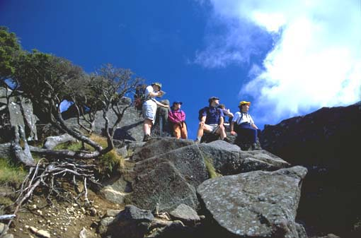
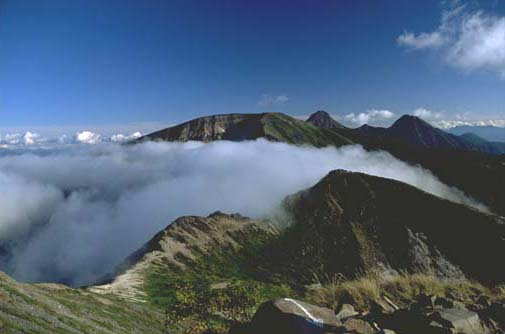
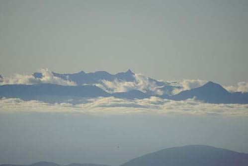
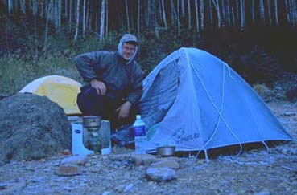
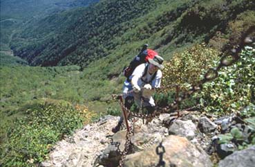
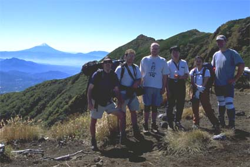
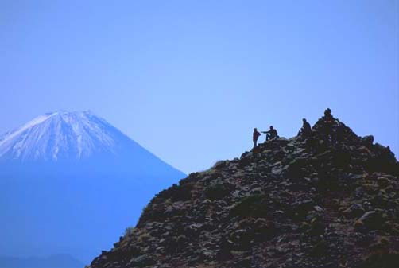
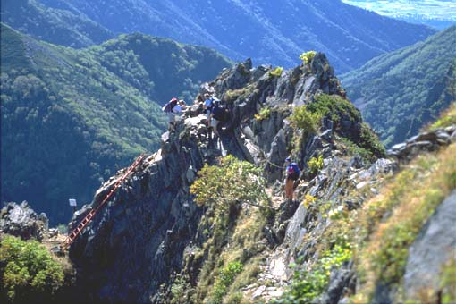
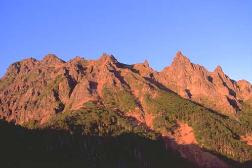

Yatsu-ga-take, September 22-24, 2001
(organised by Paul Reay)
Report by Björn, photos by Les Z.
Dear all,
Here is my report of the Yatsugatake
trip, September 22-24. The report is very long, but then it was
a long and memorable walk:
The first thing to happen on this
walk was to be expected: The meeting time was 5 a.m., and Les
C. turned up at 5:30. So off we went (Chisa, Tadashi, Les C.,
Les Z., Albert and me) in Tadashis van. The traffic jam in Tokyo
was not much more than usual and we still thought we would catch
the 10:25 bus from Chino to Mugikusa-toge, the starting point
of the walk. The problem was the traffic jam on the Chuo highway
it was a bank holiday weekend. Anyway, we arrived in Chino
just in time to see the bus leave, so we decided to drive up to
Mugikusa-toge and arrived there 10 minutes before the bus.
The weather had been mixed in Tsukuba, and there were even a few
drops of rain when we were on the Chuo highway. This changed dramatically
once we passed the Sasago tunnel and the sky was perfectly clear.
The first day's walking took us first through a forest toward
Shirakama lake. This Saturday was the first cold day of the year,
and we could see steam rising from the lake being blown away by
a gentle breeze. A truly beautiful scene, and even without the
tourist masses one might have expected at this easily accessible
place. A nearby hut was selling thermometers, and they agreed
on a temperature of 7-8 °C. It was noon and we were already
at about 2100 m altitude, the sun was warming our skins and the
cool weather made for very pleasant walking. We went up to a mountain
called Niyu, written in katakana. Chisa enlightened us that this
means "breast" in Japanese and during our lunch break
there, while taking in the first view of the day, we pondered
on the reasons why this mountain was called "breast"
and why it would be written in katakana. We found no logical explanation.
This was also the point when we had the first claim of someone
seeing the pointed peak of Yarigatake through the remaining clouds
to our west.

Near the top of Niyu: Björn, Chisa, Les
C., Albert, Tadashi.
|

View of the ridge on the way from Niyu to
the hut.
The peak in the middle is Aka-dake.
|

View of the North Alps with Yari-ga-take,
taken with a very long lens
|
The rest of the first day's walk was along a mostly gently sloped
ridge, passing Nakayama and crossing Higashi-tengudake and Neishidake,
and as it became later in the afternoon the clouds to the west
lowered and revealed the North Alps, with Yarigatake.
We were supposed to spend the night at Neishidake-sansou and arrived
there at about 5, but they knew nothing of our reservation and
were quite unfriendly. So after a bit of swearing at Paul (who
had "remotely" organised the walk) we decided to walk
on to Oren-goya, where Les Z. wanted to camp. This was probably
the best decision we took on that walk. The people in this hut
were not only VERY friendly, they also served us with the best
dinner any of us ever had in a mountain hut. We had horsemeat
sukiyaki (a local speciality) with grasshopper and locally picked
mushrooms, and of course a beer to go with this. To round up the
dinner we were invited to a glass of Sake by the hut's owner.
The next pleasant surprise was clean toilets and a VERY hot bath,
fired by wood! The hut's owner told us that they will even get
flushing toilets in a couple of days. This place certainly would
deserve the title "Best Hut of the Year 2001", if we
had such a competition.
The night was pleasant, the futons warm and I even managed to
make Tadashi stop snoring by violently pulling on his futon. We
had the room almost to ourselves and got a good night sleep
we would need it. Les Z. was not so fortunate in his tent, the
temperatures dropped to 10°C that night, but he was well
equipped.

Les Z. and his tent.
|

Bjoern somewhere around Yoko-dake.
|
The next morning we left at 7:30 and followed the ridge over Iwodake
and Yokodake to Akadake, the highest peak of the Yatsugatake range.
The views were even more spectacular than the day before, there
were no clouds in sight and we could see the North and South Alps
as well as Fuji-san. The view of Fuji-san was the best I ever
saw, perfectly symmetrical right down to the base, with the top
covered by snow. On our way we could observe the snow melting
on the south face. The walk started to be interesting around Yokodake
where there were quite a few chains to grab.

Group picture with Fuji-san:
Les C., Albert, Björn, Tadashi, Chisa and Les Z.
|
 |
After a long lunch break on Akadake and more breathtaking views
we set out for the descent to Kiretto hut (I am tempted to use
the German transcription of the katakana Klett, but I have
no idea what that may mean), and this must have been the part
which earned the walk a 5-star rating. I would not have wanted
to climb down there in bad weather.

An easy part of the descent from Aka-dake.
|

The Yoko-dake ridge, seen from Klett hut.
|
We needed 90 minutes for 70 minutes map time, and Les Z. stayed
at the campsite there and met us at Gongendake-goya early the
next morning. It was another 70-80 minutes to Gongendake-goya
hut, and the rest of us made it there well before a beautiful
sunset.
The hut was friendly, but cramped and also somewhat sloped, it
was quite difficult to sit at the dinner table. We had curry rice,
most of us with a second serving, Les C. with 2 seconds. We slept
or rather tried to sleep - on half a futon each, and I believe
Les Z. had the more comfortable night in his tent. Les met us
at around 7 and we were off for an easy 4.5 hour walk on the last
day. There were a few more chains on the way to Seinen-goya, but
the difficult part was behind us now. We passed a field of boulders
on the way up to Amigasayama, which were apparently designed for
Western leg-lengths, and Chisa was jumping from rock to rock were
most of us could walk. From Amigasayama we rapidly went down to
Fujimidaira Green Lodge, with doing one part in about half of
map time. We got there by 11:30.
This was the intended end-point of the walk, but now we had the
problem that our car was at the other side of the Yatsugatake
range, so Tadashi and me took a taxi to Kobuchizawa, train to
Chino and bus to the car, the others were in for a long, long
wait. Les C. took the train back to Tsukuba. Tadashi and me finally
arrived back at the lodge at 5, and we headed down the hill to
Spatio Kobuchizawa onsen. The onsen was very nice, with Rotenburo,
Sauna and a cold bath with actually cold water.
After dinner (about 7:30) we decided to drive home, anxious of
the traffic situation. Indeed we spent 2 hours in a huge pileup
on the Chuo, but at least Tokyo itself was free. We made it to
Tsukuba shortly after midnight.
The final final thing to say is
a big "Thank You" to Paul for organising this trip,
even though he could not come himself, and to Tadashi for his
van. I can imagine Paul biting his nails when reading the accounts
and seeing the photos of this walk. For myself I have decided
that this was the best TWMC walk I was on!
Björn
Back to the
Home Page